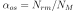
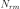

imblearn.over_sampling.KMeansSMOTE¶
-
class
imblearn.over_sampling.KMeansSMOTE(sampling_strategy='auto', random_state=None, k_neighbors=2, n_jobs=None, kmeans_estimator=None, cluster_balance_threshold='auto', density_exponent='auto')[source]¶ Apply a KMeans clustering before to over-sample using SMOTE.
This is an implementation of the algorithm described in [Rea5937a049dc-1].
Read more in the User Guide.
- Parameters
- sampling_strategyfloat, str, dict or callable, default=’auto’
Sampling information to resample the data set.
When
float, it corresponds to the desired ratio of the number of samples in the minority class over the number of samples in the majority class after resampling. Therefore, the ratio is expressed as  where  is the number of samples in the minority class after resampling and is the number of samples in the majority class.
is the number of samples in the majority class.Warning
floatis only available for binary classification. An error is raised for multi-class classification.When
str, specify the class targeted by the resampling. The number of samples in the different classes will be equalized. Possible choices are:'minority': resample only the minority class;'not minority': resample all classes but the minority class;'not majority': resample all classes but the majority class;'all': resample all classes;'auto': equivalent to'not majority'.When
dict, the keys correspond to the targeted classes. The values correspond to the desired number of samples for each targeted class.When callable, function taking
yand returns adict. The keys correspond to the targeted classes. The values correspond to the desired number of samples for each class.
- random_stateint, RandomState instance, default=None
Control the randomization of the algorithm.
If int,
random_stateis the seed used by the random number generator;If
RandomStateinstance, random_state is the random number generator;If
None, the random number generator is theRandomStateinstance used bynp.random.
- k_neighborsint or object, default=2
If
int, number of nearest neighbours to used to construct synthetic samples. If object, an estimator that inherits fromsklearn.neighbors.base.KNeighborsMixinthat will be used to find the k_neighbors.- n_jobsint, default=None
Number of CPU cores used during the cross-validation loop.
Nonemeans 1 unless in ajoblib.parallel_backendcontext.-1means using all processors. See Glossary for more details.- kmeans_estimatorint or object, default=None
A KMeans instance or the number of clusters to be used. By default, we used a
sklearn.cluster.MiniBatchKMeanswhich tend to be better with large number of samples.- cluster_balance_threshold“auto” or float, default=”auto”
The threshold at which a cluster is called balanced and where samples of the class selected for SMOTE will be oversampled. If “auto”, this will be determined by the ratio for each class, or it can be set manually.
- density_exponent“auto” or float, default=”auto”
This exponent is used to determine the density of a cluster. Leaving this to “auto” will use a feature-length based exponent.
See also
SMOTEOver-sample using SMOTE.
SVMSMOTEOver-sample using SVM-SMOTE variant.
BorderlineSMOTEOver-sample using Borderline-SMOTE variant.
ADASYNOver-sample using ADASYN.
References
- Rea5937a049dc-1
Felix Last, Georgios Douzas, Fernando Bacao, “Oversampling for Imbalanced Learning Based on K-Means and SMOTE” https://arxiv.org/abs/1711.00837
Examples
>>> import numpy as np >>> from imblearn.over_sampling import KMeansSMOTE >>> from sklearn.datasets import make_blobs >>> blobs = [100, 800, 100] >>> X, y = make_blobs(blobs, centers=[(-10, 0), (0,0), (10, 0)]) >>> # Add a single 0 sample in the middle blob >>> X = np.concatenate([X, [[0, 0]]]) >>> y = np.append(y, 0) >>> # Make this a binary classification problem >>> y = y == 1 >>> sm = KMeansSMOTE(random_state=42) >>> X_res, y_res = sm.fit_resample(X, y) >>> # Find the number of new samples in the middle blob >>> n_res_in_middle = ((X_res[:, 0] > -5) & (X_res[:, 0] < 5)).sum() >>> print("Samples in the middle blob: %s" % n_res_in_middle) Samples in the middle blob: 801 >>> print("Middle blob unchanged: %s" % (n_res_in_middle == blobs[1] + 1)) Middle blob unchanged: True >>> print("More 0 samples: %s" % ((y_res == 0).sum() > (y == 0).sum())) More 0 samples: True
- Attributes
- kmeans_estimator_estimator
The fitted clustering method used before to apply SMOTE.
- nn_k_estimator
The fitted k-NN estimator used in SMOTE.
- cluster_balance_threshold_float
The threshold used during
fitfor calling a cluster balanced.
-
__init__(self, sampling_strategy='auto', random_state=None, k_neighbors=2, n_jobs=None, kmeans_estimator=None, cluster_balance_threshold='auto', density_exponent='auto')[source]¶ Initialize self. See help(type(self)) for accurate signature.
-
fit(self, X, y)[source]¶ Check inputs and statistics of the sampler.
You should use
fit_resamplein all cases.- Parameters
- X{array-like, dataframe, sparse matrix} of shape (n_samples, n_features)
Data array.
- yarray-like of shape (n_samples,)
Target array.
- Returns
- selfobject
Return the instance itself.
-
fit_resample(self, X, y)[source]¶ Resample the dataset.
- Parameters
- X{array-like, dataframe, sparse matrix} of shape (n_samples, n_features)
Matrix containing the data which have to be sampled.
- yarray-like of shape (n_samples,)
Corresponding label for each sample in X.
- Returns
- X_resampled{array-like, dataframe, sparse matrix} of shape (n_samples_new, n_features)
The array containing the resampled data.
- y_resampledarray-like of shape (n_samples_new,)
The corresponding label of X_resampled.
-
fit_sample(self, X, y)[source]¶ Resample the dataset.
- Parameters
- X{array-like, dataframe, sparse matrix} of shape (n_samples, n_features)
Matrix containing the data which have to be sampled.
- yarray-like of shape (n_samples,)
Corresponding label for each sample in X.
- Returns
- X_resampled{array-like, dataframe, sparse matrix} of shape (n_samples_new, n_features)
The array containing the resampled data.
- y_resampledarray-like of shape (n_samples_new,)
The corresponding label of X_resampled.
-
get_params(self, deep=True)[source]¶ Get parameters for this estimator.
- Parameters
- deepbool, default=True
If True, will return the parameters for this estimator and contained subobjects that are estimators.
- Returns
- paramsmapping of string to any
Parameter names mapped to their values.
-
set_params(self, **params)[source]¶ Set the parameters of this estimator.
The method works on simple estimators as well as on nested objects (such as pipelines). The latter have parameters of the form
<component>__<parameter>so that it’s possible to update each component of a nested object.- Parameters
- **paramsdict
Estimator parameters.
- Returns
- selfobject
Estimator instance.